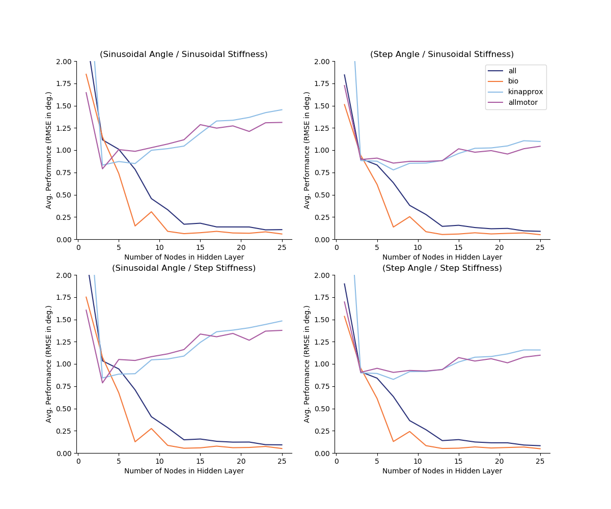

README.md for Figures Created on 2020/05/07 at 17:45.16 PST.
Notes
Seeing how the number of nodes affects performance on the same babbling data (15.0s at 1kHz). The seed for the motor babbling has been fixed to 0 such that the neural networks will have the same information. Each iteration, the weights of the ANN will be randomized (no longer using MATLAB’s initialization function initnw, which optimizes the initial weights for better performance). This will hopefully elucidate the affect that number of hidden nodes has on the performance of this algorithm. ### Next Step Run with random babbling trials to see how this performs on average when weights and babbling are random.
Parameters
params = {
'Number of Trials' : '20',
'Babbling Durations' : '15.0',
'Number of Nodes List' : '[1, 3, 5, 7, 9, 11, 13, 15, 17, 19, 21, 23, 25]',
'metrics' : '['MAE', 'RMSE']',
'Babbling Type' : 'continuous'
}Figures
perf_v_bab_dur_MAE_01-01.png

Appended on 2020/05/07 at 17:45.17 PST.
Notes
Seeing how the number of nodes affects performance on the same babbling data (15.0s at 1kHz). The seed for the motor babbling has been fixed to 0 such that the neural networks will have the same information. Each iteration, the weights of the ANN will be randomized (no longer using MATLAB’s initialization function initnw, which optimizes the initial weights for better performance). This will hopefully elucidate the affect that number of hidden nodes has on the performance of this algorithm. ### Next Step Run with random babbling trials to see how this performs on average when weights and babbling are random.
Parameters
params = {
'Number of Trials' : '20',
'Babbling Durations' : '15.0',
'Number of Nodes List' : '[1, 3, 5, 7, 9, 11, 13, 15, 17, 19, 21, 23, 25]',
'metrics' : '['MAE', 'RMSE']',
'Babbling Type' : 'continuous'
}Figures
perf_v_bab_dur_RMSE_01-01.png
